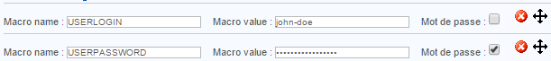

Macros¶
A macro is a variable used to retrieve certain values. A macro always starts and finishes by the “$” sign.
Standard macros¶
Standard macros are macros predefined in the source code of the monitoring engines. These different macros allow us to retrieve the value of various objects from commands.
E.g.: * The macro called $HOSTADDRESS$ enables us to retrieve the IP address of a host * The macro called $CONTACTEMAIL$ enables us to retrieve the e-mail address of the contact
Note
A complete list of macros is available at the following address: List of macros
Custom macros¶
Definition¶
Customised macros are macros defined by the user at the creation of a host or a service. They are used in check commands. Customised macros start with $_HOST for customised macros of hosts and by $_SERVICE for customised macros of services.
There are several advantages to using customised macros instead of arguments:
- The function of the macro is defined in its name. The macro $_HOSTMOTDEPASSEINTRANET$ is easier to read than $ARG1$
- The macros inherit models of hosts and of services, the hence it is possible to modify a single macro for a host or a service. On the other hand, the arguments all need to be redefined if a single argument is changed
- The number of arguments is limited to 32, unlike customised macros which are unlimited
A macro of a host is used to define a variable that is specific to the host and which will not change regardless of the service questioned: host connection identifiers, a port of connection to a particular service, an SNMP community, etc. A macro of a service is used more to define settings specific to a service: a WARNING / CRITICAL threshold, a partition to be questioned, etc.
Example¶
During the definition of a host, the following macros are created:
To retrieve these macros in a check command, you need to call it using the following variables: $_HOSTUSERLOGIN$, $_HOSTUSERPASSWORD$.
On definition of a service, the following macros are created:

To retrieve these macros in a check command, you need to invoke them using the following variables: $_SERVICEPARTITION$, $_SERVICEWARNING$, $_SERVICECRITICAL$.
A special case¶
The Community SNMP & Version fields in a host form automatically generates the following customised macros: $_HOSTSNMPCOMMUNITY$ and $_HOSTSNMPVERSION$.
Resource macros¶
Macros of resources are global macros that are used by the monitoring engine. These macros can be invoked by any type of command. They come in the form: $USERn$ where ‘n’ lies between 1 and 256.
In general, these macros are used to make reference to paths containing supervision probes. By default the $USER1$ macro is created, and its value is the following: /usr/lib/nagios/plugins.
To add a resources macro:
- Go into the menu: Configuration ==> Pollers ==> Ressources
- Click on Add

- The Resource Name field defines the name of the resource macro. E.g.: $USER3$
- The MACRO Expression field defines the value of the macro.
- The Linked Instances list allows us to define which monitoring poller will be able to access this macro.
- The Status and Comment fields serve to enable / disable the macro and to comment on it.
Environment macros¶
Environment macros (also called “to the demand” or “on demand” in English) allow us to retrieve information from all the objects obtained from the supervision. They are used to retrieve, at given moment, the value of an object.
They are complementary to standard macros. E.g.:
- The standard macro $CONTACTEMAIL$ makes reference to the e-mail address of the contact who uses the command of notification
- The environment macro $CONTACTEMAIL:centreon$ returns the e-mail address of the user: “centreon”
The complete documentation on macros “on demand” is available at this address: macro list.
Note
The use of these macros is not recommended because the search for a value of a setting of an object from another object is a consumer in terms of resources.
Warning
The enabling of the setting Use large installation tweaks makes it impossible to use environment macros.